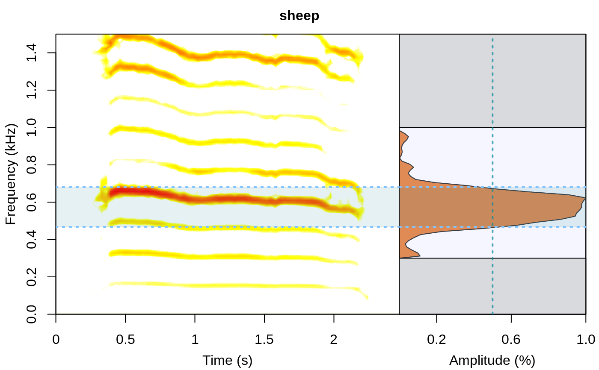

Detect frequency range on wave objects
frange.detec.Rdfrange.detec detects the frequency range of acoustic signals on wave objects.
frange.detec(wave, wl = 512, fsmooth = 0.1, threshold = 10, dB.threshold = NULL, wn = "hanning", flim = c(0, 22), bp = NULL, fast.spec = FALSE, ovlp = 50, pal = reverse.gray.colors.2, widths = c(2, 1), main = NULL, plot = TRUE, all.detec = FALSE)
Arguments
| wave | A 'wave' object produced by |
|---|---|
| wl | A numeric vector of length 1 specifying the window length of the spectrogram, default
is 512. This is used for calculating the frequency spectrum (using |
| fsmooth | A numeric vector of length 1 to smooth the frequency spectrum with a mean sliding window in kHz. This help to average amplitude "hills" to minimize the effect of amplitude modulation. Default is 0.1. |
| threshold | Amplitude threshold (%) for frequency range detection. The frequency range (not the cumulative amplitude) is represented as percentage (100% = highest amplitude). Default is 10. Ignored if 'dB.threshold' is supplied. |
| dB.threshold | Amplitude threshold for frequency range detection (in dB). The
value indicates the decrease in dB in relation to the highest amplitude (e.g.
the peak frequency) in which range will be detected. For instance a
|
| wn | Character vector of length 1 specifying window name. Default is
"hanning". See function |
| flim | A numeric vector of length 2 for the frequency limit of
the spectrogram (in kHz), as in |
| bp | A numeric vector of length 2 for the lower and upper limits of a frequency bandpass filter (in kHz) or "frange" to indicate that values in 'bottom.freq' and 'top.freq' columns will be used as bandpass limits. Default is c(0, 22). |
| fast.spec | Logical. If |
| ovlp | Numeric vector of length 1 specifying % of overlap between two
consecutive windows, as in |
| pal | Color palette function for spectrogram. Default is reverse.gray.colors.2. See
|
| widths | Numeric vector of length 2 to control the relative widths of the spectro (first element) and spectrum (second element). |
| main | Character vector of length 1 specifying the plot title. Default is |
| plot | Logical. Controls whether an image file is produced for each selection (in the
working directory). Default is |
| all.detec | Logical. If |
Value
A data frame with 2 columns for low and high frequency values. A plot is produced (in the graphic device) if plot = TRUE (see details).
Details
This functions aims to automatize the detection of frequency ranges. The frequency range is calculated as follows:
bottom.freq = the start frequency of the amplitude 'hill' containing the highest amplitude at the given threshold.
top.freq = the end frequency of the amplitude 'hill' containing the highest amplitude at the given threshold.
If plot = TRUE a graph including a spectrogram and a frequency spectrum is
produced in the graphic device. The graph would include gray areas in the frequency ranges excluded by the bandpass ('bp' argument), dotted lines highlighting the detected range.
References
Araya-Salas, M., & Smith-Vidaurre, G. (2017). warbleR: An R package to streamline analysis of animal acoustic signals. Methods in Ecology and Evolution, 8(2), 184-191.
See also
Examples
{ data(tico) frange.detec(wave = tico, wl = 512, fsmooth = 0.01, threshold = 1, bp = c(2, 8), widths = c(4, 2)) data(sheep) frange.detec(wave = sheep, wl = 512, fsmooth = 0.2, threshold = 50, bp = c(0.3, 1), flim = c(0, 1.5), pal = reverse.heat.colors, main = "sheep") }#> bottom.freq top.freq #> 1 0.46769 0.68084